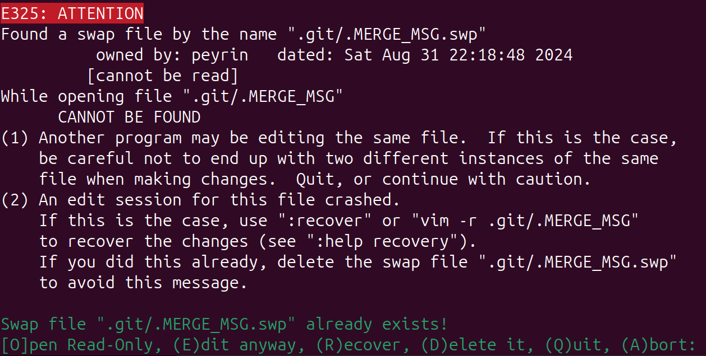
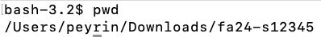
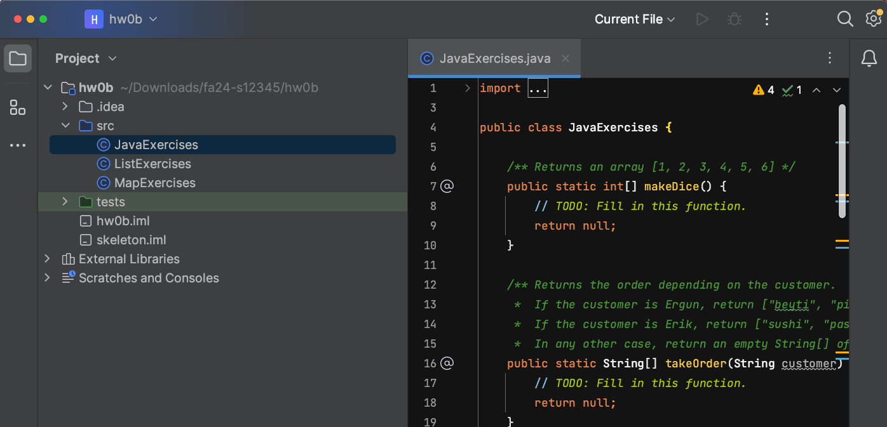
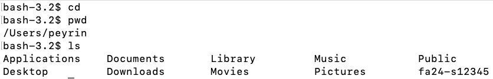

Git WTFS
Authors: Gilbert Ghang, Josh Hug
This document is intended to help you through frequently encountered weird technical failure scenarios (WTFS) in Git. It will be populated as questions arise.
fatal: refusing to merge unrelated histories
This usually happens when someone has changed the skeleton code after you’ve
pulled from it. Pull with --allow-unrelated-histories, i.e.
$ git pull skeleton main --allow-unrelated-histories --no-rebase
You may need to resolve some resulting merge conflicts.
or, if you’re pulling from your own s*** student repo (on a different computer
for example),
$ git pull origin main --allow-unrelated-histories --no-rebase
Error: failed to push some refs??
Sometimes when working with others, you’ll get a message like this when you push:
$ git push origin main
To https://github.com/gilbertghang/recipes.git
! [rejected] main -> main (non-fast-forward)
error: failed to push some refs to 'https://github.com/gilbertghang/recipes.git"
hint: Updates were rejected because the tip of your current branch is behind
hint: its remote counterpart. Integrate the remote changes (e.g.
hint: 'git pull ...') before pushing again.
hint: See the 'Note about fast-forwards' in 'git push --help' for details.
What has happened here is that your remote (i.e. your online Github repository)
contains commits that your local repository does not have. Luckily, Git is very
good about telling you how to fix these errors: if you read the error message
carefully, you’ll see that is suggests that you git pull. Do that, fix any
merge conflicts, and push. Done!
What are all these »» symbols in my code??
Sometimes when you pull from a repository, you’ll get a message like this when you pull:
$ git pull origin main
From github.com:Berkeley-CS61B/course-materials-sp16
* branch main -> FETCH_HEAD
Auto-merging proj/proj0/solution/canonical/Planet.java
CONFLICT (content): Merge conflict in proj/proj0/solution/canonical/Planet.java
Automatic merge failed; fix conflicts and then commit the result.
The problem here is that the code on your computer had a conflict with the code in the remote repository you’re pulling from, and Git couldn’t figure out how to resolve it. Since it is unsure, Git refuses to overwrite your local code.
However, when you open your Planet.java, you see some kind of crazy garbage like:
public Planet(Planet p) {
<<<<<<< HEAD
this.xPos = p.xPos;
this.yPos = p.yPos;
=======
this.xxPos = p.xxPos;
this.yyPos = p.yyPos;
>>>>>>> 27ddd0c71515e5cfc7f58a43bcf0e2144c127aed
This is a good thing! Everything between <<<<<<< HEAD and ======= is what
was on your computer, and everything between ======= and
27ddd0c71515e5cfc7f58a43bcf0e2144c127aed is what was on the remote server.
Your job is to look for these and resolve the merge conflict yourself. In this
case, the remote repository is right, so we simply delete out everything
between <<<<<<< HEAD and =======, and also delete the
>>>>>>> 27ddd0c71515e5cfc7f58a43bcf0e2144c127aed marker, leaving:
public Planet(Planet p) {
this.xxPos = p.xxPos;
this.yyPos = p.yyPos;
Once you’ve resolved all of your merge conflicts, add all the files you manually edited, and commit them as usual, e.g.
git add Planet.java
git commit -m "resolved merge conflict"
git push origin main
error: You have not concluded your merge (MERGE_HEAD exists).
If you see a message like this:
error: You have not concluded your merge (MERGE_HEAD exists).
hint: Please, commit your changes before merging.
fatal: Exiting because of unfinished merge.
Add and commit your current changes, and then pull again.
If, after pulling again, your terminal shows a message like “Please enter a commit message to explain why this merge is necessary,” see the section directly after this one.
Please enter a commit message to explain why this merge is necessary
If you see a message like this:
Merge branch 'main' of https://github.com/Berkeley-CS61B/skeleton-fa25
# Please enter a commit message to explain why this merge is necessary,
# especially if it merges an updated upstream into a topic branch.
#
# Lines starting with '#' will be ignored, and an empty message aborts
# the commit.
Git has opened a terminal text editor for you to enter a commit message. You can leave the default commit message and exit the text editor.
If you see something similar to this at the bottom of your terminal:
^G Get Help ^O WriteOut ^R Read File ^Y Prev Pg ^C Cur Pos
This indicates you’re using the Nano text editor. To quit, type Ctrl+X (both keys at the same time).
If you see a bunch of tildes (~ symbols) along the left side of your terminal, and you see something similar to this at the bottom of your terminal:
".git/COMMIT_EDITMSG" 9L, 273C 13,1 All
This indicates you’re using the Vim text editor. To save and quit, type :wq - the colon key, then the letter w, then the letter q, one after the other (not all at the same time).
Found a swap file
If you see a message like this:

Git previously opened Vim (a terminal text editor) for you to enter a commit message, but Vim crashed, possibly because you got confused and killed Vim by closing the terminal.
Just to be safe, Vim has created a “swapfile,” which contains a backup of the file you were working on when Vim crashed.
Assuming you’re okay with losing any half-finished commit message you might have typed, then you can safely press D to delete the swapfile.
If you’d like to double-check what Vim had saved when it crashed, you can press O to see the swapfile. (It will probably be blank.) Then, when you’re done viewing the contents, you can type :q to quit - the colon key, then the letter q, one after the other (not all at the same time).
Once you’ve deleted the swapfile, you can go back to what you were doing. Vim may open again to ask for a commit message - if this happens, see the section directly above this one.
fatal: ‘skeleton’ does not appear to be a git repository
If you see a message like this:
fatal: 'skeleton' does not appear to be a git repository
fatal: Could not read from remote repository.
Please make sure you have the correct access rights and the repository exists.
Git might be having trouble finding where the skeleton repo is.
Try running git remote -v. If your repo is set up correctly, you should see:
origin git@github.com:Berkeley-CS61B-Student/fa25-s*** (fetch)
origin git@github.com:Berkeley-CS61B-Student/fa25-s*** (push)
skeleton https://github.com/Berkeley-CS61B/skeleton-fa25.git (fetch)
skeleton https://github.com/Berkeley-CS61B/skeleton-fa25.git (push)
If you only see the two lines corresponding to origin, and not the two lines corresponding to skeleton, then Git doesn’t know where to find the skeleton repo.
To fix this, run the command below:
git remote add skeleton https://github.com/Berkeley-CS61B/skeleton-fa25.git
If you only see the two lines corresponding to skeleton, and not the two lines corresponding to origin, then Git doesn’t know where to find your repo.
To fix this, run the command below (replacing *** with your repo ID):
git remote add origin git@github.com:Berkeley-CS61B-Student/fa25-s***.git
If you see lines for skeleton/origin, but they’re incorrect, you can fix them by running the commands below (replacing *** with your repo ID):
git remote set-url skeleton https://github.com/Berkeley-CS61B/skeleton-fa25.git
git remote set-url origin git@github.com:Berkeley-CS61B-Student/fa25-s***.git
Then, run git remote -v again and ensure that you see two lines corresponding to origin and two lines corresponding to skeleton, and they match what we show above.
Reconcile Divergent Branches
If you see a message like this after running a git pull command:
hint: You have divergent branches and need to specify how to reconcile them.
hint: You can do so by running one of the following commands sometime before
hint: your next pull:
hint:
hint: git config pull.rebase false # merge
hint: git config pull.rebase true # rebase
hint: git config pull.ff only # fast-forward only
hint:
hint: You can replace "git config" with "git config --global" to set a default
hint: preference for all repositories. You can also pass --rebase, --no-rebase,
hint: or --ff-only on the command line to override the configured default per
hint: invocation.
fatal: Need to specify how to reconcile divergent branches.
This probably means you forgot to configure Git properly in Homework 1. Specifically, you forgot to run this line:
git config --global pull.rebase false
After running that command, try pulling again, and the error message should go away.
Multiple Repos
Problem: You pushed your code, but it doesn’t appear on Github or Gradescope.
Possible diagnosis: You may have two copies of the fa25-s*** repository in your computer. You made changes in Copy 1, and then you ran the push command from Copy 2, so none of your changes were actually pushed to Github or Gradescope.
Finding duplicate copies: How can you find if there are multiple copies of your repo in your computer? Here are some strategies:
-
Use the search feature in your file explorer (e.g. Finder, Windows Explorer) to search for folders named
fa25-s***. -
In your terminal, after navigating to your repo, run the
pwdcommand. This will tell you the current directory that your terminal is in.In the picture below, the current directory is
/Users/peyrin/Downloads/fa24-s12345.
-
In IntelliJ, the location of your repo is shown in gray text in the top-left of the sidebar.
In the picture below, the current directory is
~/Downloads/fa24-s12345/hw0b.Note: In filepaths,
~is shorthand for/Users/your-username, which is your Home folder (which contains folders like Documents, Downloads, etc.). So the current directory is equivalently/Users/peyrin/Downloads/fa24-s12345.
-
One common place to find a duplicate repo is in your home folder:
~or equivalently,/Users/your-username.This is where your terminal opens by default. In Homework 1, if you forgot to use
cdto navigate to the right place before cloning your repo, you may have accidentally created an extra copy of your repo in the home folder.To check if your home folder has a copy of your repo, you can run
cdwith no arguments, which navigates to your home folder. Then you canlsto list out files and see if you spot a repo copy:cd # Navigate to home folder pwd # Outputs the path of the home folder ls # Shows all the files in the home folder... # ...possibly including a duplicate repo?
Fix: You should manually copy all of your latest changes into one copy. (You can do this in a file explorer like Finder or Windows Explorer.)
Then, you should delete one of the copies (or rename it to something like fa25-s208-busted), and use only the single remaining repository for all future changes and pushes.
Large files detected
Problem: You see a message like this when you push:
$ git push origin main
Enumerating objects: 10, done.
Counting objects: 100% (10/10), done.
Delta compression using up to 4 threads
Compressing objects: 100% (9/9), done.
Writing objects: 100% (10/10), 40.00 MiB | 2.85 MiB/s, done.
Total 10 (delta 0), reused 0 (delta 0), pack-reused 0
remote: error: Trace: f4cdf8d29fddaa4337abfdc9d8dd9280ab9b9c657631d373d8c38daaa9823ba2
remote: error: See https://gh.io/lfs for more information.
remote: error: File proj4a/data/word_history_size14377.csv is 122.86 MB; this exceeds GitHub's file size limit of 100.00 MB
remote: error: GH001: Large files detected. You may want to try Git Large File Storage - https://git-lfs.github.com.
To github.com:Berkeley-CS61B-Student/fa25-s208.git
! [remote rejected] main -> main (pre-receive hook declined)
error: failed to push some refs to 'github.com:Berkeley-CS61B-Student/fa25-s208.git'
Diagnosis: You are trying to send a large data file to GitHub.
Normally, this is prevented using a .gitignore file, which is a special file in your repo that contains a list of files that Git should not track (when you add/commit) or sync to GitHub (when you push).
We’ve already made a .gitignore file for you, which you can view here. This file tells Git to not track or sync any of the large data files, but since Git is trying to sync a large data file anyway, that means you’ve probably messed with this .gitignore file.
Fix: We’ll create a new copy of your repo, manually move all any unsaved changes into the new copy of your repo, and fix the .gitignore file in the new copy of your repo.
- Open a file explorer (e.g. Finder), and enable hidden files, so that gitignore files show up.
- Guide for Windows 10 and below.
- Guide for Windows 11.
- Guide for Mac. Usually you just need to press Command + Shift + . (period).
- Follow Steps 1-8 of the Git nuclear option.
- In your new
fa25-s208, if there is already a.gitignorefile, delete it. - Download the gitignore file. There is a “download raw file” button in the top-right on GitHub that you can click.
- Save the fixed gitignore file in your new
fa25-s208folder (not your old busted one). - You should now be able to add, commit, push, and the large data files will now be ignored.
I pulled from skeleton, but don’t see updates
Suppose you run git pull skeleton main to get the latest starter code, and then you delete or modify the starter code.
Running git pull skeleton main again will not restore the starter code. The first time you pulled, you already incorporated the commit where the staff added the starter code, and when you deleted/modified the starter code, you added another commit on top of the staff commit. Pulling again will not re-do the previous staff commit (that’s not what “pulling” means).
If you want to restore the skeleton code (possibly abandoning any progress you’ve made, if you’ve made any), see this part of the Using Git guide for how to restore a past commit.
The Git Nuclear Option
If all else fails, we can clone a fresh copy of our repo and move any unsaved changes from the old copy into the new copy.
- Close IntelliJ.
- Open your file explorer (e.g. Windows Explorer, Finder on Mac).
- Find your old repository folder, and rename it (e.g. from
fa25-s208tofa25-s208-busted). - Open a terminal.
- Use the
cdcommand to navigate to where you want to put your repo (e.g.cd ~/Desktop/cs61b, or something). - In the same terminal, run the clone command to download a fresh copy of your repo (replacing
fa25-s***with your repo name:git clone git@github.com:Berkeley-CS61B-Student/fa25-s***.git - Use the
cdcommand to navigate to the new repo:cd fa25-s*** - Tell the new repo where to find the skeleton:
git remote add skeleton https://github.com/Berkeley-CS61B/skeleton-fa25.git - Copy over the desired files from the busted copy to the fresh copy. You will have to do this step manually, e.g. by copy-pasting files in your file explorer.
A video demo of this process is available in this video: